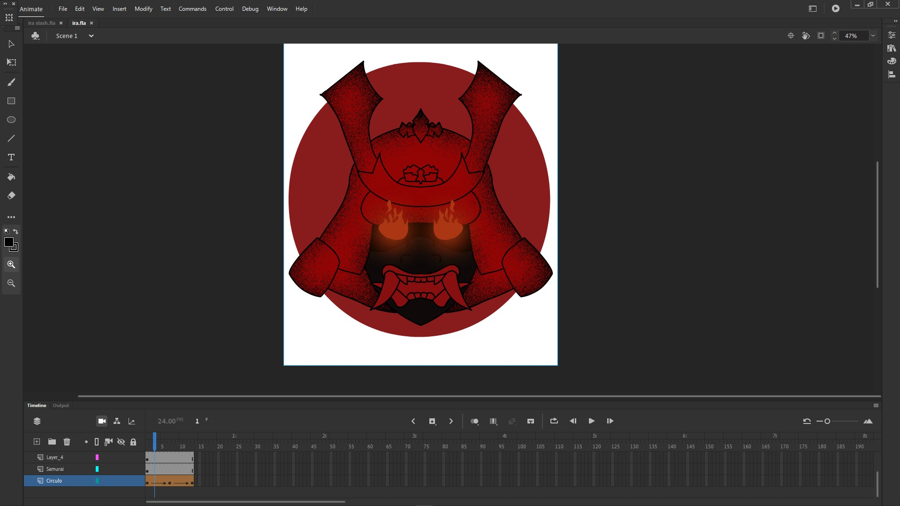

Animación Ira
Esta fue una tarea de psicología en la que teníamos el objetivo de representar de forma precisa la emoción de la Ira. En mi caso, tuve que hacerlo como si fuera una animación. Los softwares utilizados para esto fueron Photoshop, Animate, After Effects y Sony Vegas. El mayor reto fue aprender a hacer las cosas, pues no tenía mucha experiencia en animación.
